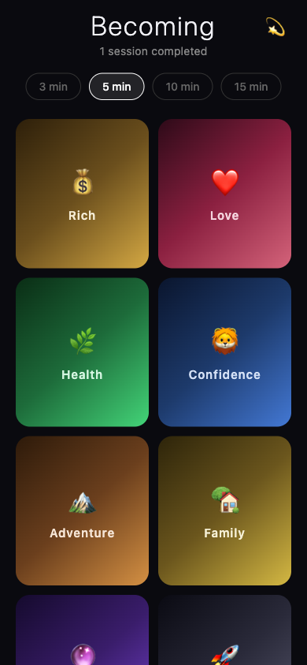
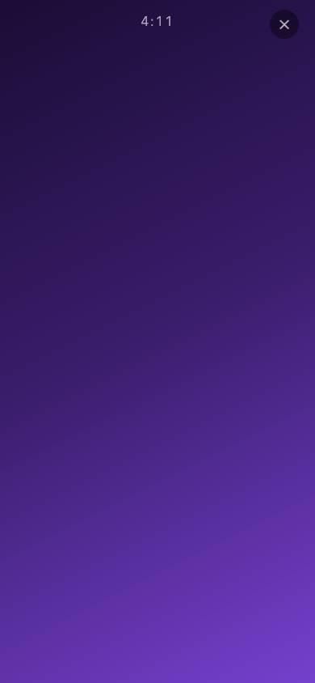
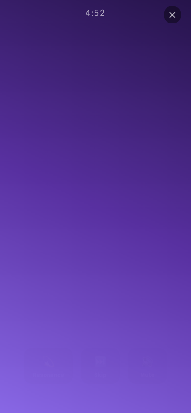
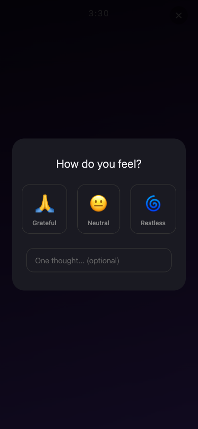

Becoming is a calm, screen-filling meditation experience. Pick a theme, press play, and let animated visuals, spoken affirmations, and ambient music guide your focus for 3 to 15 minutes. Everything stays on your device — no accounts, no ads, no tracking.

No subscriptions, no upsells, no "unlock premium". Just a calm, focused experience.
Rich, Love, Health, Confidence, Adventure, Family, Purpose, Career — each with its own color palette and 30 handcrafted affirmations.
Thoughtfully written affirmations appear as floating cards every 15 seconds, gently animated with fade and scale transitions.
Each affirmation is read by iOS text-to-speech so you can close your eyes and listen. Background music ducks automatically.
A looping ambient track plays throughout the session, creating a meditative soundscape even in silent mode.
After each session, tap how you feel — Grateful, Neutral, or Restless — and optionally jot a one-line note. Track your streak over time.
Write your own affirmations, add personal photos, toggle library affirmations on or off. Star moments with Resonance to save to your Highlight Reel.
Pick one of 8 life themes. Each theme has its own color palette, gradient visuals, and curated affirmations.
Choose 3, 5, 10, or 15 minutes. Tap the theme card and your session begins immediately — no setup, no onboarding.
Watch animated gradients flow, listen to affirmations spoken aloud, and when the timer ends, log how you feel.


